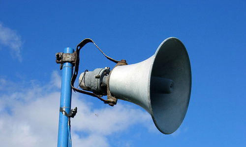

Ô nhiễm tiếng ồn có thể gây bệnh

Các nghiên cứu gần đây khẳng định, ô nhiễm tiếng ồn dẫn đầu danh sách các dạng ô nhiễm không khí có hại cho sức khỏe, nguy hiểm cho người lớn lẫn trẻ con.
1. Cản trở học hành
- Một số công trình nghiên cứu quy mô lớn gần đây đã xếp ô nhiễm tiếng ồn đứng đầu trong danh sách ô nhiễm không khí có hại đối với sức khỏe con người. Ô nhiễm tiếng
ồn có hại cho cả người lớn lẫn trẻ con. Trẻ em phải tiếp xúc với tiếng ồn liên tục sẽ gặp khó khăn với việc học tập. Nhất là khả năng hoàn thành bài tập và học ngôn
ngữ bị ảnh hưởng rất nhiều.
2. Mất ngủ
- Ô nhiễm tiếng ồn cũng ảnh hưởng nhiều đến giấc ngủ của con người. Nếu một người thiếu ngủ thì toàn bộ cơ thể sẽ bị ảnh hưởng tiêu cực. Đó là điều không thể tránh khỏi.
3. Ù tai
- Thường xuyên tiếp xúc với tiếng ồn sẽ khiến con người bị ù tai (luôn nghe thấy âm thanh rè rè bên tai). Tình trạng này tác động xấu đến hệ thần kinh và sức khỏe của bạn.
4. Huyết áp cao
- Những nghiên cứu cho thấy ô nhiễm tiếng ồn cũng là nguyên nhân làm huyết áp cao và gây ra những vấn đề về tim. Loại ô nhiễm này đang ngày càng trở nên nguy hiểm cho
con người trong hiện tại và tương lai.
5. Suy giảm trí nhớ
- Ô nhiễm tiếng ồn cũng tác động đến trí nhớ của con người và những khả năng nhận thức khác. Nó đặc biệt ảnh hưởng đến khả năng ghi nhớ bài học của trẻ em.
- "Mức ô nhiễm tiếng ồn có thể chấp nhận được là khoảng 40 decibel (dB). Tất cả âm thanh vượt quá mức này có thể nguy hại đến khả năng nghe và sức khỏe của bạn", các
nhà nghiên cứu cảnh báo.